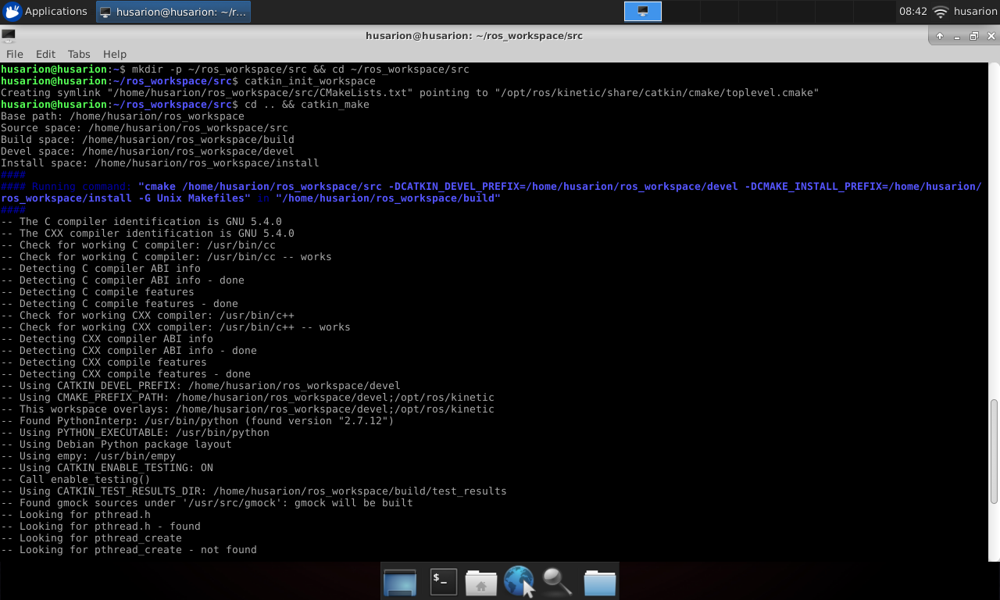
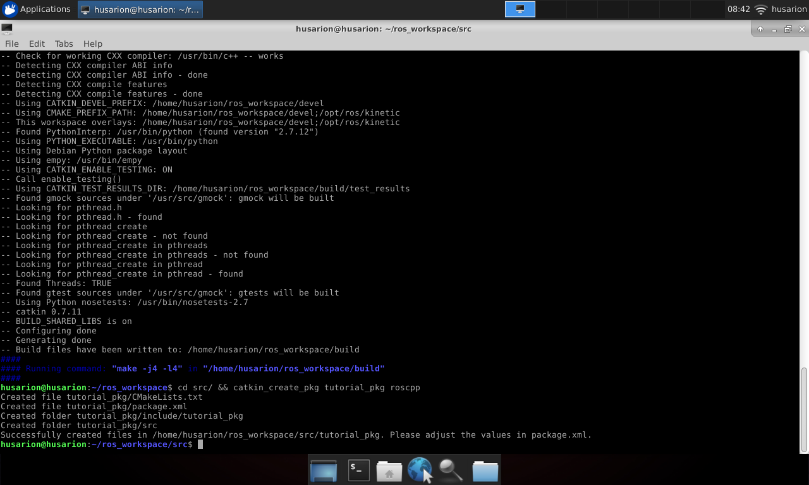
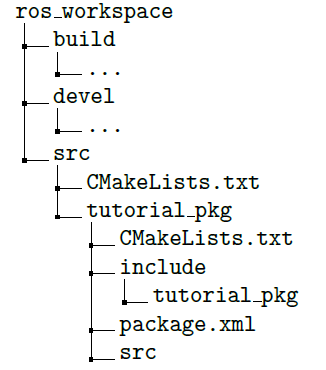
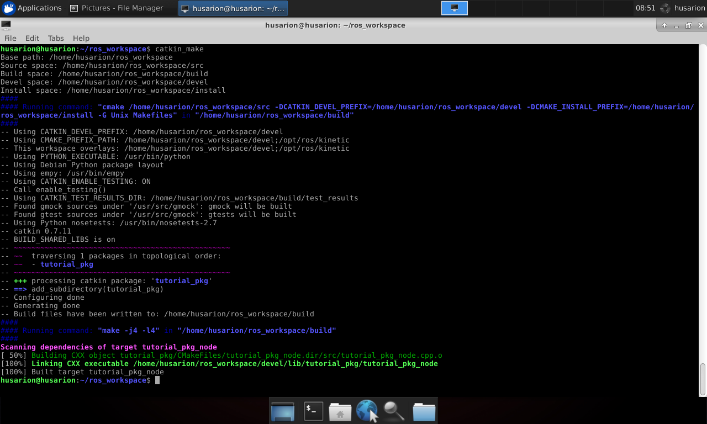
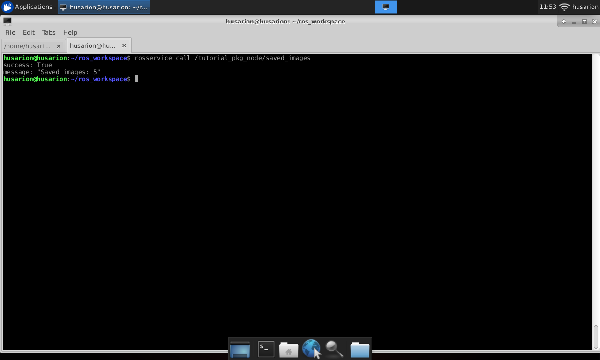

Creating nodes
Workspace setup
To begin developing your own nodes, you need to do some workspace configuration first. Workspace is the place where all your source files, libraries and compiled nodes will be stored.
First you need to create a folder, where your workspace will be located. You can do this by typing in:
$ mkdir -p ~/ros_workspace/src
This will create folder named ros_workspace and folder src inside it.
All of the source files for your nodes will be stored in folder src.
Then you can initialize your workspace with command
catkin_init_workspace executed in src folder:
$ cd ~/ros_workspace/src
$ catkin_init_workspace
Now you can move to your workspace main directory:
$ cd ~/ros_workspace
and compile it:
$ catkin_make
After this command you should get output like this:

And it should end with:
####
#### Running command: "make -j4 -l4" in "/home/pi/ros_workspace/build"
####
After this operation you should have two new folders in your workspace:
build for storing files that are used during compilation and devel
for storing output files.
Now your workspace is set up and ready for creating new nodes.
Creating new package
As you should already know, in ROS, nodes are distributed in packages, so
in order to create a node you need to create a package. Packages are
created with command catkin_create_pkg and it must be executed in
src folder in your workspace.
Syntax of catkin_create_pkg is:
catkin_create_pkg package_name [required packages]
where package_name is desired package name and argument
required packages is optional and contain names of packages that are used
by newly created packages.
For our tutorial we will create package named tutorial_pkg which
depends on package roscpp. Package roscpp is a basic ROS library for
C++.
$ cd ~/ros_workspace/src
$ catkin_create_pkg tutorial_pkg roscpp
After typing in this command you should get output like this:

This will create folder named tutorial_pkg and some files in it. Your
workspace file structure should now look like like below:

Created files are:
CMakeLists.txt- these are build instructions for your nodes, you need to edit this file if you want to compile any node, we will do it later.package.xml- this file contains package metadata like author, description, version or required packages. Package can be built without changing it, but you should adjust this file if you want to publish your package to others.
Write code for your first node
Let’s create C++ file for your node, name it tutorial_pkg_node.cpp and
place it in src folder under tutorial_pkg:
$ touch ~/ros_workspace/src/tutorial_pkg/src/tutorial_pkg_node.cpp
Open file in your favourite text editor and paste:
#include <ros/ros.h>
int main(int argc, char **argv) {
ros::init(argc, argv, "example_node");
ros::NodeHandle n("~");
ros::Rate loop_rate(50);
while (ros::ok()) {
ros::spinOnce();
loop_rate.sleep();
}
}
Code explanation line by line:
#include <ros/ros.h>
Add header files for basic ROS libraries.
int main(int argc, char **argv) {
Beginning of node main function.
ros::init(argc, argv, "example_node");
Initialization of ROS node, this function contacts with ROS master and registers node in the system.
ros::NodeHandle n("~");
Get the handle for node, this handle is required for interactions with system e.g. subscribing to topic.
ros::Rate loop_rate(50);
Define rate for repeatable operations.
while (ros::ok()) {
Check if ROS is working. E.g. if ROS master is stopped or there was sent
signal to stop the system, ros::ok() will return false.
ros::spinOnce();
Process all incoming messages.
loop_rate.sleep();
Wait until defined time passes.
You can save the C++ file.
Building your node
Before you build the node, you need to edit CMakeLists.txt from
tutorial_pkg directory. Open it in your favourite text editor.
Find line:
# add_compile_options(-std=c++11)
and uncomment it (remove # sign). This will allow to use C++11 standard of C++.
You should also find and uncomment line:
# add_executable(${PROJECT_NAME}_node src/tutorial_pkg_node.cpp)
This will let the compiler know that it should create executable
file from defined source. Created executable
will be your node. Variable PROJECT_NAME is defined by line project(tutorial_pkg).
This results in tutorial_pkg_node as the name of the executable. You can adjust it to your needs.
After that find and uncomment lines:
# target_link_libraries(${PROJECT_NAME}_node
# ${catkin_LIBRARIES}
# )
This will cause compiler to link libraries required by your node. Save the changes and close editor.
Open terminal, move to workspace main directory and build your project
with command catkin_make:
$ cd ~/ros_workspace
$ catkin_make
You should get output like this:

Running your node
Your node is built and ready for running, but before you run it, you need to load some environment variables:
$ source ~/ros_workspace/devel/setup.sh
These environment variables allow you to run node regardless of directory you are working in. You have to load it every time you open new terminal or you can add line:
. ~/ros_workspace/devel/setup.sh
to your .bashrc file.
To run your node you can use command line or .launch file as with any
other node. Remember that package is tutorial_pkg and node is
tutorial_pkg_node.
Task 1 Run your node with command line or .launch file. Then use
rosnode and rqt_graph tools to examine system and check if your node
is visible in the system.
To remind, you can start ROS by typing in the name of the node, you can do this with the following command:
$ rosrun package_name node_type [options]
If you want to use .launch files associated with your custom package you will have to create launch directory:
$ mkdir ~/ros_workspace/src/tutorial_pkg/launch
Place your .launch files there. This way you can start them by typing:
$ roslaunch tutorial_pkg your_launch_file.launch
Subscribing to topic
You will modify your node to subscribe to topic
/camera/rgb/image_raw and calculate average brightness of image.
To process message received from the camera you need a header file with message type definition. You can include it with:
#include <sensor_msgs/Image.h>
Image message is an object consisting of following fields:
std_msgs/Header header- header with message metedatauint32 height- image height in pixelsuint32 width- image width in pixelsstring encoding- pixel encoding definitionuint8 is_bigendian- is data expressed in bigendian manneruint32 step- length of data for one rowstd::vector<uint8_t> data- actual image data
Then you need a function for processing received message:
void imageCallback(const sensor_msgs::ImageConstPtr &image) {
long long sum = 0;
for( int value : image->data )
{
sum+=value;
}
int avg = sum/image->data.size();
std::cout << "Brightness: " << avg << std::endl;
}
Code explanation line by line:
void imageCallback(const sensor_msgs::ImageConstPtr &image)
Function definition, argument is pointer to incoming message.
long long sum = 0;
Variable for storing sum of all pixel values.
for( int value : image->data )
Iteration through every pixel and colour.
sum+=value;
Add current pixel value to sum.
int avg = sum/image->data.size();
Calculate average value.
std::cout << "Brightness: " << avg << std::endl;
Print brightness value to screen.
Last thing to do is defining topic to subscribe:
ros::Subscriber sub = n.subscribe("/camera/rgb/image_raw", 10, imageCallback);
Here we use method subscribe of NodeHandle object. Arguments of
method are:
/camera/rgb/image_raw- name of topic to subscribe.10- message queue size. Messages are processed in order they come in. In the case that node receives, in short time, more messages than this value, excessive messages will be dropped.imageCallback- function to process incoming messages.
Your final code should look like this:
#include <ros/ros.h>
#include <sensor_msgs/Image.h>
void imageCallback(const sensor_msgs::ImageConstPtr &image) {
long long sum = 0;
for (int value : image->data) {
sum += value;
}
int avg = sum / image->data.size();
std::cout << "Brightness: " << avg << std::endl;
}
int main(int argc, char **argv) {
ros::init(argc, argv, "example_node");
ros::NodeHandle n("~");
ros::Subscriber sub = n.subscribe("/camera/rgb/image_raw", 10, imageCallback);
ros::Rate loop_rate(50);
while (ros::ok()) {
ros::spinOnce();
loop_rate.sleep();
}
}
Task 2 Build your node and run it along with camera driver. Use
rosnode, rostopic and rqt_graph tools to examine system and check
how data is passed between nodes.
You can use below .launch file:
<launch>
<arg name="use_rosbot" default="true"/>
<arg name="use_gazebo" default="false"/>
<include if="$(arg use_rosbot)" file="$(find astra_launch)/launch/astra.launch"/>
<include if="$(arg use_gazebo)" file="$(find rosbot_gazebo)/launch/rosbot_world.launch"/>
<include if="$(arg use_gazebo)" file="$(find rosbot_gazebo)/launch/rosbot.launch"/>
<node pkg="tutorial_pkg" type="tutorial_pkg_node" name="tutorial_pkg_node" output="screen">
</node>
</launch>
Receiving parameters
Your node can receive parameters, they are used to customize behaviour of node e.g. subscribed topic name, device name or transmission speed for serial port.
You will modify a node to receive boolean parameter which defines if node should print image brightness to screen.
To receive the parameter you need a variable to store its value, in this example variable should have a global scope:
bool print_b;
Then receive parameter value:
n.param<bool>("print_brightness", print_b, false);
Here we use method param of NodeHandle object. Arguments of method
are:
print_brightness- name of parameter to receive.print_b- variable to store parameter value.false- parameter default value.
Last thing is to print brightness dependant on parameter value:
if(print_b){
std::cout << "Brightness: " << avg << std::endl;
}
Your final code should look like this:
#include <ros/ros.h>
#include <sensor_msgs/Image.h>
bool print_b;
void imageCallback(const sensor_msgs::ImageConstPtr &image) {
long long sum = 0;
for (int value : image->data) {
sum += value;
}
int avg = sum / image->data.size();
if(print_b){
std::cout << "Brightness: " << avg << std::endl;
}
}
int main(int argc, char **argv) {
ros::init(argc, argv, "example_node");
ros::NodeHandle n("~");
ros::Subscriber sub = n.subscribe("/camera/rgb/image_raw", 10, imageCallback);
n.param<bool>("print_brightness", print_b, false);
ros::Rate loop_rate(50);
while (ros::ok()) {
ros::spinOnce();
loop_rate.sleep();
}
}
Task 3 Run your node with parameter print_brightness set to true
and again set to false. Observe how behaviour of node changes.
Publishing to topic
You will modify node to publish brightness value to a new topic with
message of type std_msgs/UInt8. Message std_msgs/UInt8 is object
with only one field data, which contain actual integer data.
Begin with including message header file:
#include <std_msgs/UInt8.h>
Next define publisher object with global scope:
ros::Publisher brightness_pub;
Then register in the system to publish to a specific topic:
brightness_pub = n.advertise<std_msgs::UInt8>("brightness" , 1);
Here we use method advertise of NodeHandle object. Arguments of
method are:
brightness- topic name.1- message queue size.
You also need to declare type of message which will be published, in this
case it is std_msgs::UInt8.
Last thing is to put some data into message and send it to topic with some frequency:
std_msgs::UInt8 brightness_value;
brightness_value.data=avg;
brightness_pub.publish(brightness_value);
In our example it can be done while processing each message incoming from camera topic.
Your final code should look like this:
#include <ros/ros.h>
#include <sensor_msgs/Image.h>
#include <std_msgs/UInt8.h>
bool print_b;
ros::Publisher brightness_pub;
void imageCallback(const sensor_msgs::ImageConstPtr &image) {
long long sum = 0;
for (int value : image->data) {
sum += value;
}
int avg = sum / image->data.size();
if(print_b){
std::cout << "Brightness: " << avg << std::endl;
}
std_msgs::UInt8 brightness_value;
brightness_value.data=avg;
brightness_pub.publish(brightness_value);
}
int main(int argc, char **argv) {
ros::init(argc, argv, "example_node");
ros::NodeHandle n("~");
ros::Subscriber sub = n.subscribe("/camera/rgb/image_raw", 10, imageCallback);
n.param<bool>("print_brightness", print_b, false);
brightness_pub = n.advertise<std_msgs::UInt8>("brightness" , 1);
ros::Rate loop_rate(50);
while (ros::ok()) {
ros::spinOnce();
loop_rate.sleep();
}
}
Task 4 Compile your node and run it with astra.launch. Use rosnode,
rostopic and rqt_graph tools to examine the system, then use
rostopic echo tool to read brightness of the image from the camera.
Calling the service
You will modify node to call to a service with message type
std_srvs/Empty, this type has no field and can not carry any data, it
can be used only for invoking action in another node and getting reply
when its done.
As a service provider we will use image_saver node from image_view
package. Image_saver have one service named save. every time it is
called, one frame from subscribed image topic is saved to hard drive.
Desired node behaviour is to count incoming frames and call service once per given number of frames.
Begin with importing required header files:
#include <std_srvs/Empty.h>
We need one variable for counting passed frames:
int frames_passed = 0;
In imageCallback function increment counter with every incoming
message:
frames_passed++;
Create a client which will be caling to service:
ros::ServiceClient client = n.serviceClient<std_srvs::Empty>("/image_saver/save");
Here we use method serviceClient of NodeHandle object. Method has
only one argument, it is the name of service. You also need to determine
message type for service: std_srvs::Empty.
Instantiate message object:
std_srvs::Empty srv;
Check if required number of frames passed and reset counter:
if (frames_passed>100){
frames_passed=0;
Call the service:
client.call(srv);
Your final code should look like this:
#include <ros/ros.h>
#include <sensor_msgs/Image.h>
#include <std_msgs/UInt8.h>
#include <std_srvs/Empty.h>
bool print_b;
ros::Publisher brightness_pub;
int frames_passed = 0;
void imageCallback(const sensor_msgs::ImageConstPtr &image) {
long long sum = 0;
for (int value : image->data) {
sum += value;
}
int avg = sum / image->data.size();
if(print_b){
std::cout << "Brightness: " << avg << std::endl;
}
std_msgs::UInt8 brightness_value;
brightness_value.data=avg;
brightness_pub.publish(brightness_value);
frames_passed++;
}
int main(int argc, char **argv) {
ros::init(argc, argv, "example_node");
ros::NodeHandle n("~");
ros::Subscriber sub = n.subscribe("/camera/rgb/image_raw", 10, imageCallback);
n.param<bool>("print_brightness", print_b, false);
brightness_pub = n.advertise<std_msgs::UInt8>("brightness" , 1);
ros::ServiceClient client = n.serviceClient<std_srvs::Empty>("/image_saver/save");
std_srvs::Empty srv;
ros::Rate loop_rate(50);
while (ros::ok()) {
ros::spinOnce();
if (frames_passed>100){
frames_passed=0;
client.call(srv);
}
loop_rate.sleep();
}
}
Task 5 Build your node and run it with astra.launch and image_saver.
Use rosnode, rostopic and rqt_graph tools to examine the system
and check how data is passed between nodes. Let the nodes work for a
certain time. Observe as new frames are being saved to your workspace
directory.
You can use below .launch file:
<launch>
<arg name="use_rosbot" default="true"/>
<arg name="use_gazebo" default="false"/>
<include if="$(arg use_rosbot)" file="$(find astra_launch)/launch/astra.launch"/>
<include if="$(arg use_gazebo)" file="$(find rosbot_gazebo)/launch/rosbot_world.launch"/>
<include if="$(arg use_gazebo)" file="$(find rosbot_gazebo)/launch/rosbot.launch"/>
<node pkg="image_view" type="image_saver" name="image_saver">
<param name="save_all_image" value="false" />
<param name="filename_format" value="$(env HOME)/ros_workspace/image%04d.%s"/>
<remap from="/image" to="/camera/rgb/image_raw"/>
</node>
<node pkg="tutorial_pkg" type="tutorial_pkg_node" name="tutorial_pkg_node" output="screen">
<param name="print_brightness" value="false"/>
</node>
</launch>
To delete image files created by this example run following command in your ros_workspace directory:
$ rm $(find image*)
Providing a service
You will modify node to provide a service, which returns information
regarding how many images were saved. This service will have a message
type std_srvs/Trigger, it has no field for request and two fields for
response: integer to indicate if service was triggered successfully or
not and string for short summary of executed action.
Start with including required header files:
#include <std_srvs/Trigger.h>
Add variable for storing number of saved images:
int saved_imgs = 0;
Next, you need a function to execute when service is called:
bool saved_img(std_srvs::Trigger::Request &req, std_srvs::Trigger::Response &res)
{
res.success=1;
std::string str("Saved images: ");
std::string num = std::to_string(saved_imgs);
str.append(num);
res.message= str;
return true;
}
Arguments for this function are pointers to request and response data. All services are called the same way, even if it does not carry any data, in that case these are pointer of void type.
Prepare string with response description:
std::string str("Saved images: ");
std::string num = std::to_string(saved_imgs);
str.append(num);
Fill string field with data:
res.message= str;
Fill integer field with data, this mean service was executed properly:
res.success=1;
Finish function, response will be sent to requesting node:
return true;
next thing to do is to increment image counter after saving frame:
saved_imgs++;
Last thing to do is to register provided service in the system:
ros::ServiceServer service = n.advertiseService("saved_images", saved_img);
Here we use method advertiseService of NodeHandle object. Arguments
of method are:
saved_images- service name.saved_img- method to execute.
Your final code should look like this:
#include <ros/ros.h>
#include <sensor_msgs/Image.h>
#include <std_msgs/UInt8.h>
#include <std_srvs/Empty.h>
#include <std_srvs/Trigger.h>
bool print_b;
ros::Publisher brightness_pub;
int frames_passed = 0;
int saved_imgs = 0;
void imageCallback(const sensor_msgs::ImageConstPtr &image) {
long long sum = 0;
for (int value : image->data) {
sum += value;
}
int avg = sum / image->data.size();
if (print_b) {
std::cout << "Brightness: " << avg << std::endl;
}
std_msgs::UInt8 brightness_value;
brightness_value.data = avg;
brightness_pub.publish(brightness_value);
frames_passed++;
}
bool saved_img(std_srvs::Trigger::Request &req, std_srvs::Trigger::Response &res) {
res.success = 1;
std::string str("Saved images: ");
std::string num = std::to_string(saved_imgs);
str.append(num);
res.message = str;
return true;
}
int main(int argc, char **argv) {
ros::init(argc, argv, "example_node");
ros::NodeHandle n("~");
ros::Subscriber sub = n.subscribe("/camera/rgb/image_raw", 10, imageCallback);
n.param<bool>("print_brightness", print_b, false);
brightness_pub = n.advertise<std_msgs::UInt8>("brightness", 1);
ros::ServiceClient client = n.serviceClient<std_srvs::Empty>("/image_saver/save");
std_srvs::Empty srv;
ros::ServiceServer service = n.advertiseService("saved_images", saved_img);
ros::Rate loop_rate(50);
while (ros::ok()) {
ros::spinOnce();
if (frames_passed > 100) {
frames_passed = 0;
client.call(srv);
saved_imgs++;
}
loop_rate.sleep();
}
}
Task 6 Build your node and run it as in previous task. Use
rosnode, rostopic and rqt_graph tools to examine the system.
Use rosservice call tool to call service provided by your node. Usage
of rosservice is analogical to rostopic. To call service type:
$ rosservice call /tutorial_pkg_node/saved_images
As a response you should get something like this:

Message types
In ROS there are many message types defined, they are grouped in packages accordingly to their application:
-
- messages with basic data types like integer or float
-
- for handling data from sensors
-
- for handling maps or robot localization data
-
- for handling information regarding object position, orientation, velocity or acceleration, also for defining points or polygons
While developing nodes for mobile robots you will probably want to use some of this messages:
-
- it has fields for determining position , velocity and effort for a set of joints.
-
- message for handling scans of planar laser scanners like RpLidar or Hokuyo.
-
- message for one dimensional distance measurement
-
- message for handling flat occupancy grid based maps.
-
- message for defining robot position and orientation based on odometry measurements.
-
- message for defining robot path as a set of positions
-
- message for defining linear and angular object velocity. Could be also used for setting desired velocities.
It is also possible to implement user defined messages if existing ones are not sufficient.
Summary
After completing this tutorial you should be able to write code for your own node, build and run it in the same way as it can be done with nodes provided with ROS.
Your node may be configured with parameters and it can:
subscribe topics published by other nodes
publish new topic
provide service
call service provided by other nodes
by Łukasz Mitka, Husarion
Do you need any support with completing this tutorial or have any difficulties with software or hardware? Feel free to describe your thoughts on our community forum: https://community.husarion.com/ or to contact with our support: support@husarion.com